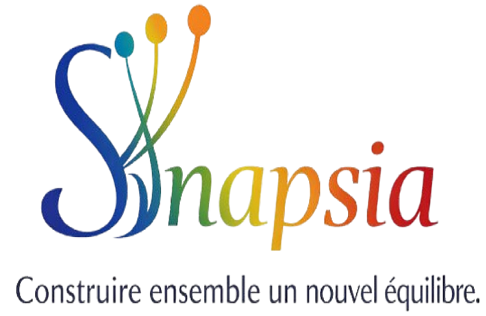
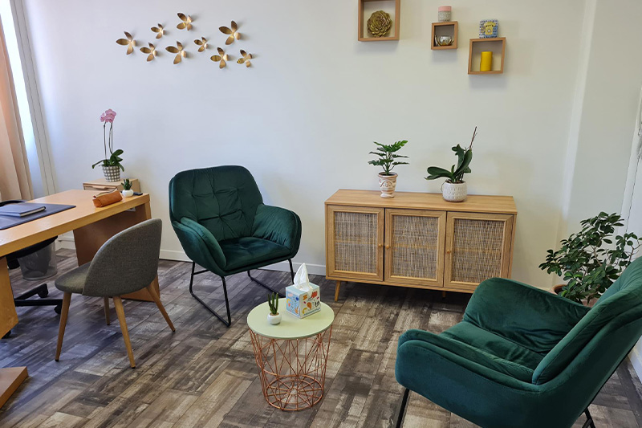

Grâce au neurofeedback et à un accompagnement personnalisé, Synapsia vous aide à mieux gérer le stress, les émotions et les défis du quotidien.
Prendre rendez-vousChez Synapsia, chaque accompagnement est personnalisé. Le neurofeedback permet au cerveau de développer ses capacités d'autorégulation afin de favoriser un mieux-être durable, dans un cadre calme, respectueux et bienveillant.
Une approche basée sur les capacités naturelles d'adaptation et d'autorégulation du cerveau.
Chaque personne est unique. Les séances sont adaptées à vos besoins et à vos objectifs.
Un espace calme et accueillant favorisant l'écoute, le respect et le bien-être.
Un premier échange permet de comprendre vos besoins et de déterminer l'accompagnement le plus adapté.
Prendre rendez-vous